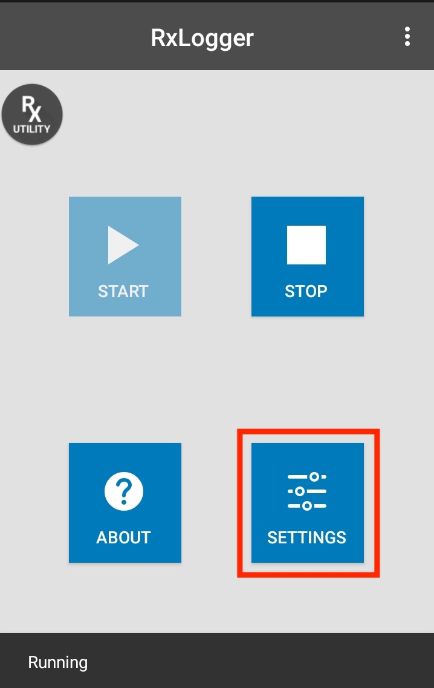
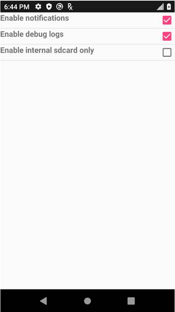
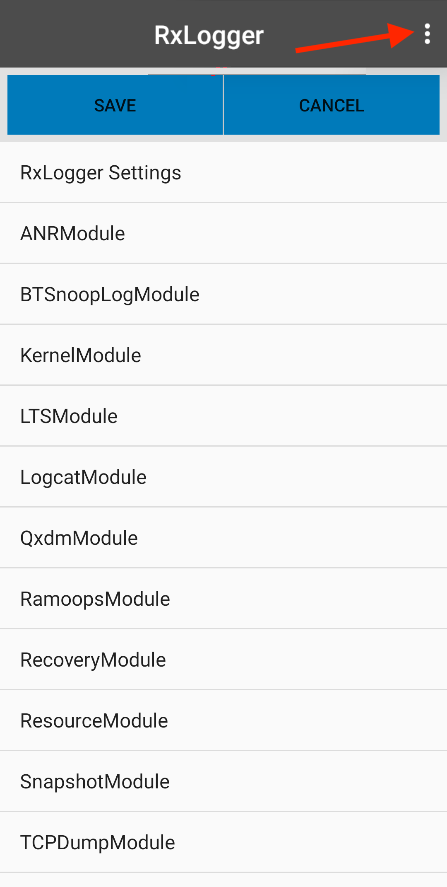
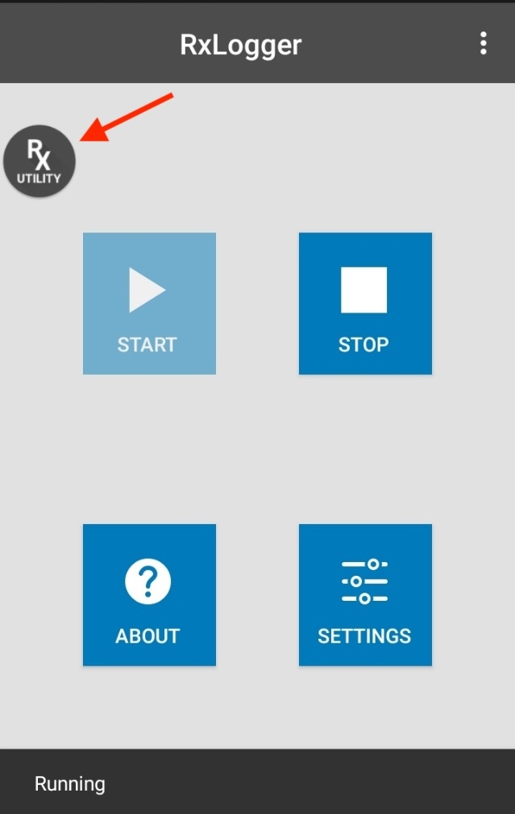
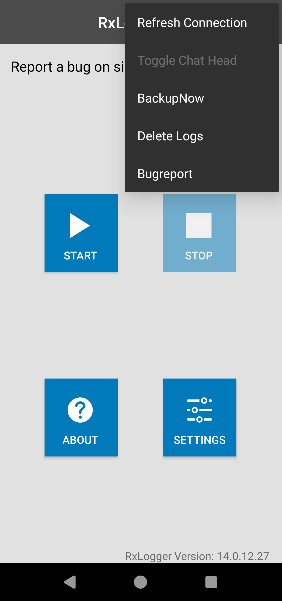

ADVISORY
Starting with Android 15, RxLogger defaults to Secure Mode. with non-secure legacy mode deprecated in Android 14 and phased out by Android 15. Consequently, RxLogger will only process intents from third-party apps via the AppOps method, and Secure Backup will replace the non-secure legacy backup method as the standard.Overview
RxLogger settings can be configured via the RxLogger user interface or by deploying a configuration file to the device. All settings are stored in the config.json file, which can be exported and deployed across multiple devices within an enterprise. Within the Android Enterprise Work Profile, RxLogger settings vary based on whether the device is operating in the Work Profile or Personal Profile.
Secure Mode
Secure Mode enhances Rxlogger security by restricting external access to logs and providing a secure method for broadcasting intents. Only authorized apps can access logs or use the secure method to call RxLogger APIs. This reduces the risk of misuse of potentially sensitive data, ensures access is limited to trusted users and creates a protected environment for deploying configuration files to adjust RxLogger settings.
Requirements
To use RxLogger in Secure Mode, ensure the following:
- Operating System: Android 11 or higher
- OEMConfig: v11.5.0.1 or higher
- RxLogger Versions: Minimum version required based on platform (see Zebra Platform Devices list):
- SD660: v7.0.4.11
- SM6375: v7.75.4.26
- QC6490: v7.0.5.17
Enable Secure Mode
To enable Secure Mode, configure the setting through Zebra OEMConfig using an Enterprise Mobility Management (EMM) system. For instructions to enable/disable Secure Mode, see Control Secure Logging in the OEMConfig documentation.
When Secure Mode is activated, RxLogger-Secure is displayed as the title in the RxLogger main screen. If an app uses RxLogger APIs, it must be granted access to these APIs. For instructions, see AppOps.
RxLogger in Secure Mode
Deployment
To deploy the configuration file (config.json) using ADB, the intent must be broadcast before file deployment. Failing to broadcast the intent results in the configuration file remaining unprocessed, preventing the application of new settings. Use the following command to broadcast this intent via ADB shell:
com.symbol.rxlogger.intent.action.DEPLOY_CONFIG_SHELL
In Secure Mode, any third-party app deploying the configuration file must broadcast the intent and include a "token" as an extra. Obtain the "token" from the Zebra Device Manager with the appropriate delegation scope; see Using Delegation Scopes for guidance. Deployment fails if the intent is not broadcast during deployment. To broadcast the intent for deploying the configuration file, use:
com.symbol.rxlogger.intent.action.DEPLOY_CONFIG -e “token” “<token-id>”
Replace <token-id> with the obtained token; see App Token for details.
Logs
Logs collected in Secure Mode are stored separately from the original log path.
| Name | Folder Path | Folder Path Representation |
|---|---|---|
| Log Path | <RxLogger_Path> | <RxLogger_Path> represents one of the following: • Internal storage path: /sdcard/RxLogger/ • External storage path: /storage/<UUID>/RxLogger/ (where <UUID> is the device's unique identifier) |
| Secure Log Path | <Secure_RxLogger_Path> | <Secure_RxLogger_Path> represents one of the following: • Internal storage path: /sdcard/Android/data/com.symbol.rxlogger/RxLogger/secure/log_data/ • External storage path: /storage/<UUID>/Android/data/com.symbol.rxlogger/RxLogger/secure/log_data/ (where <UUID> is the device's unique identifier) Note: For logs to be captured in Secure Mode, the external storage SD card must be encrypted through Encryption Manager from MX. If not, the log path defaults to the internal storage path. |
For specific log paths for each module, refer to the corresponding RxLogger Module documentation.
Backup
In Secure Mode, backups of the RxLogger folder are password-protected.
- For backup from the RxLogger main screen, see Secure Backup.
- For backup from the RxLogger Utility see Secure Backup.
APIs
In Secure Mode, apps must use special methods, AppOps or sending an app token, for authentication to access the RxLogger APIs; see APIs for details.
Settings GUI
To configure general log settings through the GUI:
Tap the Settings button to display a list of configurable modules currently loaded by
diagdaemon: Tap RxLogger Settings to display a list of general configurations.

Enable/disable the desired settings:
• Enable notifications - Shows the RxLogger icon in the notification bar when running. This is helpful to determine whether RxLogger is running in the background. This is enabled by default.
• Enable debug logs - Collects debug logs from RxLogger and Diagdaemon in the location specified in the Settings File section. After enabling/disabling, tap the back button, tap Save and reboot the device for the change to take into effect. This is disabled by default.
• Enable internal sdcard only - Saves logs to the internal SD card even when if an external SD card is inserted. By default, logs are saved to the external SD card if present.

To configure module settings through the GUI:
- Tap the Settings button to display a list of configurable modules loaded by
diagdaemon:
- Tap the module to be edited to display a list of its parameters:
- Edit settings as required. Tap the BACK button when done.

- Repeat Steps 2 and 3 for all desired modules.
- On the modules listing screen, tap SAVE to preserve all changes.
See the Modules page for settings information.
Settings Data Types
Supported data types:
- Integer - Numerical data (0 - 2,147,483,647), such as the number of files to store. For fields that do not allow a value of 0, such as file size, a 1 is substituted.
- String - Text such as file names and storage paths. The UI accepts any alphanumeric input and symbols as permitted by the file system.
- Boolean - True/false information, such as to enable/disable a module, represented as checkboxes.
- List - Select the value from a list of pre-assigned values, represented as radio buttons.
Reset to Default
Reset to Default restores all configurations to their original settings, facilitating recovery from misconfigurations and enabling a fresh start with default values. This option is not available when RxLogger is active to prevent configuration changes from disrupting logging.
To enable Reset to Default (ensure RxLogger is disabled):
- Use one of the two methods to access the feature:
- RxLogger Settings: From the RxLogger main screen, tap Settings. Tap the options menu in the upper right corner and select Reset to default.
 
- Instant Logging Settings: Follow instructions to Launch Instant Logging. On the Report an Issue screen, open the options menu in the upper right corner and select Reset to default.
- RxLogger Settings: From the RxLogger main screen, tap Settings. Tap the options menu in the upper right corner and select Reset to default.
- A notification appears indicating success or failure.
Settings File
All RxLogger settings are stored in a file on the device, permitting remote configuration and mass deployment of these files using an enterprise mobile management (EMM) system.
- File name -
config.json - Internal storage:
/sdcard/RxLogger(if the external SD card is not present on the device or Enable internal sdcard only option is activated) - External storage (SD card):
/storage/<UUID>/RxLogger, where <UUID> represents the UUID of the SD card (if the external SD card is present)
RxLogger settings can be configured through the RxLogger user interface (UI) or by editing the settings file.
Note: Zebra recommends using the same config.json file across devices with the same Android platform version. Use of the same file across different Android platform versions may lead to unexpected behavior.
Configure via UI
To configure RxLogger settings via UI:
- Open RxLogger settings.
- Modify the desired configuration settings.
- Save the configuration.
Config.jsonsettings file is created and saved to either internal or external storage. RxLogger restarts to apply the new configuration settings.
This method ensures accuracy and minimizes the risk of errors that can occur when manually editing values in config.json.
Configure via File
To manually configure RxLogger settings:
Locate and retrieve the
config.jsonsettings file from either internal or external storage.Manually update the
config.jsonfile with the required changes, modifying only the values in the "Value" field; all other fields are pre-defined. For parameter values, refer to the Modules section. Zebra recommends viewing the file in JSON format for easier editing.For secure mode, broadcast the intent to trigger RxLogger to restart upon detecting an updated
config.jsonfile. This must be performed prior to file deployment. For instructions, see Secure Mode Deployment.Deploy the
config.jsonfile to the designated path in Step 1.For non-secure mode (legacy mode), broadcast the Refresh Config Intent API to trigger RxLogger to restart and apply the new settings:
com.symbol.dd.intent.action.REFRESH_CONFIG_ACTIONNote: Starting with RxLogger v13.0.12.76, Refresh Config Intent API is discontinued. Instead, RxLogger will automatically refresh to implement changes whenever it detects an updated config file.
Options
The RxLogger options menu, accessed via the three-dot icon at the top right of the main RxLogger screen, offers a variety of functionalities. The available options are described in the following subsections.

Toggle Chat Head
The Toggle Chat Head features, also known as RxLogger Utility, activates a floating icon named RxUtility that can be positioned anywhereon the device screen. Tapping this icon allows real-time viewing of RxLogger logs directly on the device. For more information, see Log Viewer.

BackupNow
BackupNow provides an on-demand option to generate a backup of the RxLogger logs. This is particularly useful to save logs on a device at a specific point in time after an issue occurs. Backup logs are saved on the device as a .zip file stored in /sdcard/rxlogger/Backup-<date>-<HHMMSS>.zip, with the date and timestamp as part of the file name. Backups are triggered by any of the following methods:
- RxLogger - from the main screen, tap on the top right menu and select BackupNow.
- RxLogger Utility - tap on the round save icon, or chat head (cannot be deleted with a long press).
- Android intent - use the BackupNow broadcast intent:
com.symbol.rxlogger.intent.action.BACKUP_NOW.
Backup via RxLogger main screen (left) or RxUtility (right)
Secure Backup
When Secure Mode is enabled, backups create password-protected .zip files of RxLogger logs. These logs could aid in diagnosing issues. The .zip files are named with the date and time of the backup, and stored in /<Secure_RxLogger_Path>/SecureBackup-<date>-<HHMMSS>.zip.
<Secure_RxLogger_Path> represents one of the following:
- Internal storage path: /sdcard/Android/data/com.symbol.rxlogger/RxLogger/secure/log_data/
- External storage path: /storage/<UUID>/Android/data/com.symbol.rxlogger/RxLogger/secure/log_data/
A backup in Secure Mode can be initiated through any of the following methods:
- RxLogger - Select BackupNow from the top right menu on the main screen and provide a password.
- RxLogger Utility - Tap the round save icon or chat head (not removable by long press), and input a password.
- Android shell - Use the BackupNow broadcast intent with password; see BackupNow.
- Third party app - Use the BackupNow broadcast intent with a token and password; see Secure Mode in BackupNow.
Passwords must be at least 8 characters long and include an uppercase letter, a lowercase letter, a digit and a special character such as @#$%^&*+-=!.
|
|

|
Backup via RxLogger main screen (left) or RxUtility (middle). Password entry (right).
When attempting to open the backup .zip file, the user is prompted to enter the password that was initially set for the file.
Delete Logs
Delete Logs clears log storage and optimizes space by removing specified log types, either log files or backup files. This option is unavailable while RxLogger is active and only becomes available when RxLogger is stopped, ensuring data integrity and preventing accidental deletion during logging.
Note: The config.json and RxInfo.txt files are preserved to retain essential configuration and remove intent data.
To delete logs:
- Open RxLogger and tap the options menu at the top right.
- Select Delete Logs.
- Choose the log type to delete:
- Confirm the action to proceed with file deletion.
Bug Report
The Bug Report compiles device logs, stack traces, and diagnostic data to aid in troubleshooting app or system issues. It can be initiated whether RxLogger is running or stopped, offering operational flexibility. Once initiated, the bug report option is disabled until completion to prevent overlapping reports.
The bug report includes:
- Dumpsys - Diagnostic output for system services.
- Dumpstate - System error logs.
- Logcat - System messages, including stack traces and logs from apps using the Log class.
- Systrace - If enabled, tracks execution times of app and system processes for performance analysis.
Data is stored in the following folder paths, depending on whether Secure Mode is active and the storage type (<uuid> represents the UUID of the device):
- Legacy Path:
- Internal storage:
/sdcard/RxLogger/ - External storage:
/storage/<uuid>/RxLogger/
- Internal storage:
- Secure Path:
- Internal storage:
/sdcard/Android/data/com.symbol.rxlogger/RxLogger/secure/log_data/ - External storage:
/storage/<uuid>/Android/data/com.symbol.rxlogger/RxLogger/secure/log_data/
- Internal storage:
To create a bug report:
- Open RxLogger and tap the options menu at the top right.
- Select Bugreport.
- A message is displayed indicating the bug report is initiated.
- Upon completion, a message appears indicating success or failure. If successful, bug report is saved as a .zip file named:
RxBugreport-<ProductName>-<BuildID>-<Date>-<Time>.zip
Android Work Profile
Android Enterprise Work Profile for mixed-use company-owned devices enables organizations to enforce corporate policies and restrictions while preserving the privacy of personal data. Formerly known as Corporate-Owned, Personally Enabled (COPE), this allows a single device to serve both professional and personal needs by providing separate work and personal profiles. The Work Profile ensures that corporate data remains secure and separate from personal applications, safeguarding user privacy.
Behavior
RxLogger behavior varies by profile type:
- Work Profile:
- Access: RxLogger is accessible. When enabled, users receive a consent dialog to inform them about data collection.
- Utility: The RxLogger Utility, also known as Toggle Chat Head, is disabled. It normally displays the floating RxLogger icon for quick access to its options.
- APIs: RxLogger intent APIs are disabled.
- Logs: Log path remains the same; see Logs.  Work Profile - RxLogger is accessible
- Personal Profile:
- Access: RxLogger is fully disabled, with options grayed out and inaccessible.
- APIs: RxLogger intent APIs are disabled. Personal Profile - RxLogger is inaccessible
Related Links
- About RxLogger - Provides an overview of RxLogger and how to use
- Modules - Explains data collection module parameters and settings
- APIs - Used to start and stop RxLogger and back up all data
- Log Viewer - View RxLogger logs in realtime